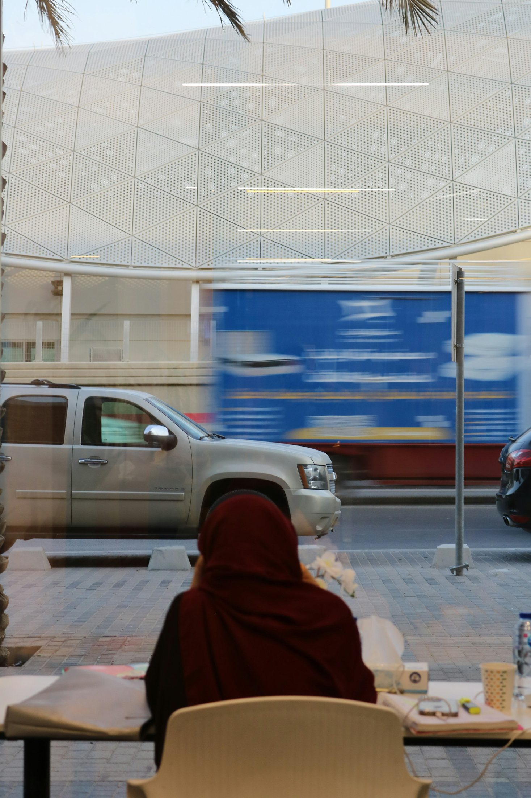

Findings from the Torchbearer roundtable
What Saudi Arabia's next phase of financial inclusion asks of regulators, banks and builders, after access has largely been won.
Executive summary
In thirteen years Saudi Arabia has put a bank account in the hands of four in five adults and moved most of its shopping off cash. That race is close to won. The harder one has started.
Adults with an account
Up from 46% in 2011. For women, from 15% to 74%.1
Saved in an account
Fewer than half of account holders saved formally in the past year.1
Own savings first
Family and friends are the first call for 38%. Own savings come second.1
SME share of bank lending
Rising fast, against a 2030 target of 20%.5
The Kingdom has built some of the best financial plumbing in the world. What it has not yet built, at the same standard, is the experience of using it. On 10 October, Torchbearer brought bankers, fintech builders, product leads, an educator and investors into one room in Riyadh to ask what comes after access. Their answer, and the data, point the same way.
Accounts and digital payments are near universal. Saving, planning and borrowing well are not. The gap between holding an account and being helped by one is where the next decade's work sits.
Buying a phone in four instalments takes seconds. Borrowing a small sum of cash in an emergency, at a fair price, is still hard. People fill the gap with family, asset sales and expensive lenders.
Only 9% of adults borrowed to start or run a business. Data from point of sale terminals, e-invoicing and open banking can now price that risk. One bank's pilot suggests it works.
SAMA issues guidelines. Too often institutions turn them into the slowest possible process and call it compliance. The cost lands on the customer.
Account ownership among 15 to 24 year olds fell from 71% to 65% between 2021 and 2024. Financial habits form early. So does exclusion.
Part one · Where the Kingdom stands
Few countries have moved this far, this fast. The plumbing is now world class.
In 2011 fewer than half of Saudi adults had an account, and only 15% of women did. By 2024 the figure was 79% overall and 74% for women, one of the fastest closings of a gender gap the Global Findex has recorded.1 Electronic payments made up 79% of retail transactions in 2024, beating a target that was not due until 2030.2
Behind those numbers sits the infrastructure: mada, instant payments through SARIE, an open banking framework that now covers payment initiation,11 three licensed digital banks and a wallet that signed up a million users in 21 days.12 Company registration links the tax, labour and social insurance authorities in a single flow. Visiting investors, one participant said, simply do not expect it.
UN E-Government Development Index 2024, up 25 places.3
Fintechs operating by August 2026, against 525 targeted by 2030.4
Retail payments made electronically in 2024.2
Figure 1
The fastest gap to close
Adults with an account at a financial institution, Saudi Arabia, %
Source: World Bank, Global Findex Database 2025 (survey year 2024). Adults aged 15 and over.
How the rails were laid
Vision 2030 sets the course
Financial Sector Development Program launched
SARIE instant payments go live
Open banking, account information
Payment initiation framework; first digital bank opens
BNPL leaders licensed as finance companies
Part one · Continued
An account is a door. The numbers below show how many people walk through it, and how few go much further.
Figure 2 · The participation cliff
Share of Saudi adults who did each in the past year, %
Below this line, participation halves. Family still lends as often as the entire formal system.
Figure 3 · When something goes wrong
Main source of emergency money within 30 days, % of adults
Resilience is borrowed from relatives
Almost every Saudi adult says they could find emergency money within a month. Ask where it would come from and the picture changes. Family comes first. Selling an asset has more than tripled as a first resort, from 3% in 2021 to 10% in 2024. A formal loan is the main answer for just 6%.1
Ask how long a household could last if its main income stopped, and 41% say a month or less.1 The national household savings rate sits near 6%, against a 2030 goal of 10%.6
None of this shows up in an account-ownership statistic. That is the point. The headline measure of inclusion has done its job and is now hiding the next problem.
Source: World Bank, Global Findex Database 2025 (survey year 2024), Saudi Arabia. Figures rounded. Savings rate: Financial Sector Development Program.

Part two · 01
Choice is not the same as control. A customer with twelve options and no map has neither.
Can I tell what this product is, what it costs in total, and what happens if I miss a payment?
Can I compare it with the alternatives, in plain language, before I commit?
Can I do the everyday things, like paying a bill or putting money aside, in a few steps and without help?
Agency means a person can understand what is on offer, choose what fits and act on it without a guide. On that measure, the Kingdom's apps are generous and confusing in equal parts.
Participants described banking apps that try to be everything at once. Every provider wants to be the super app, so a simple task gets buried under features nobody asked for. One banker who has built products in two markets put it plainly: person to person transfers are easy, but paying a bill means getting lost.
The deeper issue is method. Several participants said products reach the market without testing on the people meant to use them. Journeys are designed around the institution's processes and the regulator's checklist, then handed to the customer. Nobody asks whether a first-time borrower can tell a microloan from an instalment plan.
The cost of that falls hardest on those with least margin for error: new earners, the elderly, residents who do not read Arabic, and the young.
Governance is there for the people. It is the implementation that has to be seamless, or they will not use it.
Roundtable participant
Figure 4 · Starting late
Account ownership, ages 15 to 24, %
The only group to go backwards. An educator at the table runs a school of 4,000 families and could not find a way for a child to pay for a school meal without cash.1
Part two · 02
You can buy a phone in four instalments in under a minute. Try borrowing the cash for a car repair.
Figure 5 · The credit ladder, and its missing rung
How a typical salaried resident can borrow today
Instant, at checkout, tied to a purchase. Licensed and growing, with Tamara and Tabby now under SAMA finance licences.9
A few thousand riyals, today, at a fair price, without a salary transfer or a branch visit. This is the need. Supply is thin and costly.
Around SAR 470 billion in bank consumer loans. Fast for the salaried, closed to most others.8
About SAR 712 billion in retail mortgages, the largest single block of household debt.8
The table kept returning to one product that barely exists. Consumer credit tied to a purchase is everywhere. Cash credit for an emergency is not. "Everyone needs money at any time," as one participant said. When it is not available at a fair price, people improvise.
Some turn to microfinance apps. SAMA has licensed eleven consumer microfinance companies, the latest in April 2026.9 Participants cited annual costs approaching 28% and loan sizes up to SAR 30,000, with little advertising and so little awareness of who is lending on what terms. They also described borrowers in remote areas who take a loan and disappear, and lenders who respond by pricing everyone as if they might.
That is the trap. Without data on thin-file customers, risk is priced high. Priced high, the product attracts the riskiest borrowers. The good ones go back to family.
What a resilient system looks like
An automatic share of salary swept into a separate, sharia-compliant savings pot, opted out of rather than into.
Small, fast, capped in total cost, and reported to the credit bureau so that repaying builds a history.
One annual cost figure, shown the same way by every lender, BNPL included.
could last a month or less if their main income stopped.1
household savings rate, against a 2030 goal of 10%.6
rise in selling assets as the first answer to an emergency, 2021 to 2024.1
licensed consumer microfinance companies as of April 2026.9
Part two · 03
Credit that buys things is useful. Credit that builds things compounds.
Only 9% of Saudi adults borrowed to start or run a business in 2024.1 Lending to small firms is climbing quickly, from 9.4% of bank portfolios in 2024 to about 11.5% in 2025, but the 2030 goal is 20% and the remaining gap is estimated at more than SAR 300 billion.5 Meanwhile women's labour force participation has roughly doubled since 2017, to 34.5%.7 A generation of new earners and founders is arriving faster than credit designed for them.
From the room · An AI underwriting pilot
A large Saudi bank's merchant business ran a machine learning credit model alongside its usual process. Many of the merchants it scored had previously been flagged as poor risks. The model is not yet allowed to decide alone: people still sign off, and will until it has proved itself.
small merchants scored by the model
fell 30 to 60 days behind on repayment
The identity problem
The same bank described merchants who hold two or three trade names. When one is reported for fraud, they apply again under the next. Linking every licence to the person behind it is a data problem the state has largely solved already.
The data is already there
Point of sale flows, ZATCA e-invoices and open banking can show how a small business actually trades. That is a better basis for a loan than collateral it does not have.
Figure 6 · SME share of bank lending, %
Part three · The operating system
The constraint is rarely the regulation itself. It is how institutions choose to read it.
Getting licensed by SAMA takes time, capital and many rounds of review. Participants described founders reworking their business model mid-application. The result is a quiet consolidation: licensed players become the backbone, renting their rails to others as banking as a service. That lowers the cost of entry for new ideas. It also concentrates risk and bargaining power in a few hands.
Many fintech teams are staffed from banks and bring bank instincts with them: sequential sign-offs, long approval chains and a reluctance to define a process the regulator has not spelled out. One participant, used to working in Pakistan, found the process burden here heavier than at home. Another, sixteen years in the Kingdom, pointed to training. Both were describing the same gap in confidence.
By the time a new journey is designed, approved and built, a new circular may have changed the brief. Firms that treat compliance as a one-off sign-off are always behind. Firms that treat it as a design input, with modular processes and someone who owns regulatory change, keep up. Participants also flagged a basic gap in the CRM and workflow systems that would make this possible.
SAMA will give you the guidelines. It is you who has to define the process, instead of setting a bar and saying you cannot go beyond it.
Roundtable participant
This was the sharpest point of agreement in the room. Regulators set the minimum. Customers judge institutions on everything above it. Where a guideline is silent, the default should be the customer's interest, documented, rather than the most cautious reading anyone can imagine.
From Saudi to the world
A Saudi team at a regional bootcamp said the most common reaction they met was surprise that the product was built in Riyadh. The Kingdom is still seen as a buyer of technology. Participants argued that the fastest way to change that is to solve hard local problems well, then export them. The pieces exist. Tahaluf, the Riyadh joint venture with Informa, now runs Money20/20 Middle East, LEAP and Black Hat MEA and has taken LEAP to Hong Kong.13 Inclusion products proven in this market, at this pace of regulatory change, would travel.
Part four · Recommendations
Each is practical inside the current regulatory framework. None needs a new institution. Together they move the measure of success from how many people are in the system to how well it serves them.
Publish an annual financial health index alongside the inclusion figures: formal saving, emergency cover, productive borrowing and arrears, broken down by gender, age, income and nationality. What gets reported gets fixed.
Define a standard small-ticket emergency product: fast, sharia-compliant, with a capped total cost and positive reporting to SIMAH. Pair it with salary sweeps into savings, so the buffer exists before the emergency does.
Make point of sale, e-invoice and open banking data usable for SME underwriting with customer consent. Link every commercial registration to its beneficial owner so a bad actor cannot simply change names.
Encourage AI credit models, with rules that travel with them: human sign-off until performance is proven, monitoring for bias against thin-file and female borrowers, and an explanation the customer can read.
Before launch, test core tasks with customers who are new, older, non-Arabic speaking or under 25. Publish the time and the number of steps it takes to pay a bill, top up, or understand a loan's full cost.
Supervised youth accounts and cards that schools, canteens and parents can use. Financial literacy taught through the games children already play. Reverse the fall in youth account ownership by 2028.
One principle runs through all six. Design for the customer with least margin for error, and the system works for everyone else.
Part four · Continued
Ten indicators that would tell us whether access is turning into agency, resilience and productive participation.
| Indicator | Latest | 2030 | Distance travelled |
|---|---|---|---|
| Adults with an accountFindex 2024 | 79% | 90%TB | |
| Women with an accountFindex 2024 | 74% | 90%TB | |
| Ages 15 to 24 with an accountFindex 2024 | 65% | 85%TB | |
| Adults saving in an accountFindex 2024 | 37% | 55%TB | |
| Emergency money mainly from own savingsFindex 2024 | 22% | 40%TB | |
| Household savings rateFSDP baseline | 6% | 10%OFF | |
| Adults borrowing to start or run a businessFindex 2024 | 9% | 15%TB | |
| SME share of bank lendingSAMA, 2025 | 11.5% | 20%OFF | |
| Active fintech companiesSAMA, August 2026 | 371 | 525OFF | |
| Time to pay a bill in a new appNot yet measured | n/a | <60sTB |
OFF official national target. TB level proposed by Torchbearer as a reasonable stretch for 2030. Bars show the latest value as a share of the 2030 level.
Agree the financial health index and its first baseline.
Emergency product standard issued. First journey tests published.
Youth account decline reversed. Cash-flow lending at scale.
AI credit models move to full decisioning where proven.
Saving, not just holding, becomes the headline measure.
Method
This paper combines three sources. The first is the Torchbearer roundtable held in Riyadh on 10 October 2026, recorded with participants' consent, transcribed and analysed for recurring themes. The second is public data, principally the World Bank Global Findex Database 2025, SAMA releases and statistical bulletins, GASTAT labour force surveys and the UN E-Government Survey. The third is Torchbearer's own experience designing and verifying programmes in Saudi Arabia and Pakistan.
Quotations are unattributed under the Chatham House Rule and lightly edited for clarity. Figures cited from the discussion, such as loan pricing and pilot results, are participants' accounts and have not been independently audited. Targets marked as Torchbearer proposals are our own judgement.
Sources
A note on who is counted. Expatriate workers sent a record SAR 165.5 billion home in 2025.10 They are among the heaviest users of Saudi payment rails and among the least served by its savings and credit products. Any serious inclusion measure should report them separately.
We design, deliver and verify programmes that change how people live, work and manage money.
Torchbearer is a social enterprise working in Saudi Arabia and Pakistan. Verification is our discipline: we measure what a programme actually changed, not how many people it reached. This paper is the first in a series on financial health in the Kingdom.
Continue the conversation
jointorchbearer.com
With thanks to everyone who gave their time and candour on 10 October. © Torchbearer 2026. Photography via Unsplash.